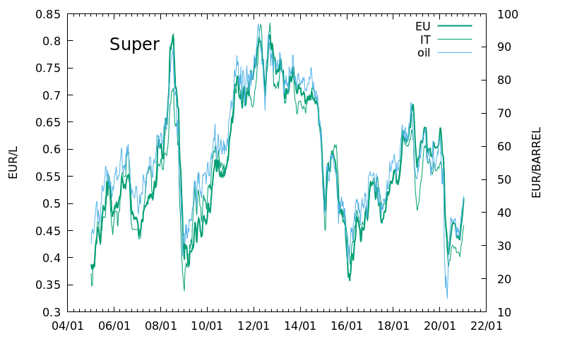
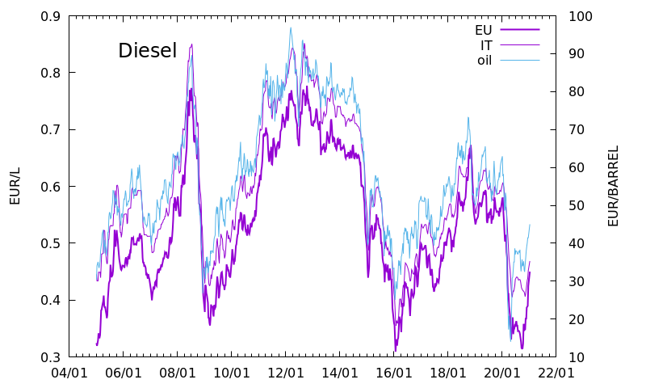
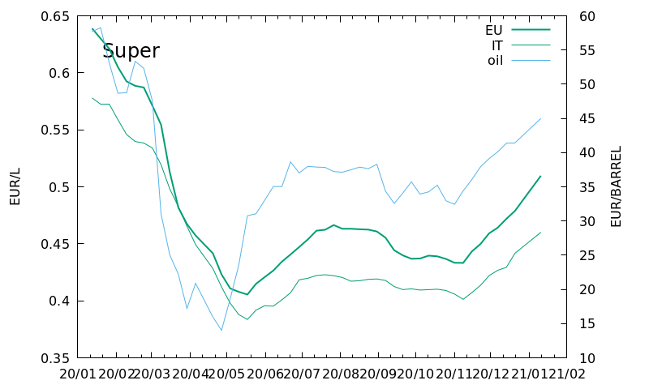
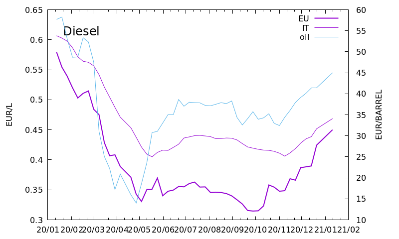
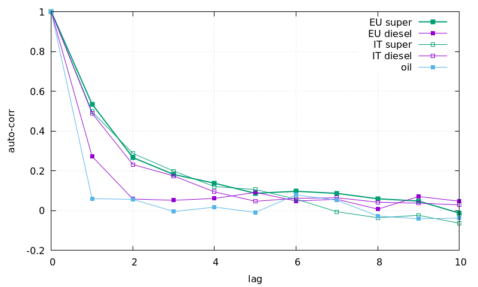
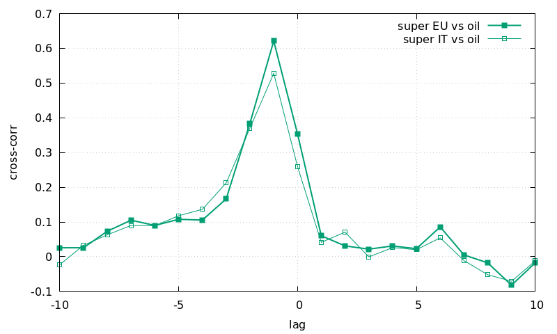
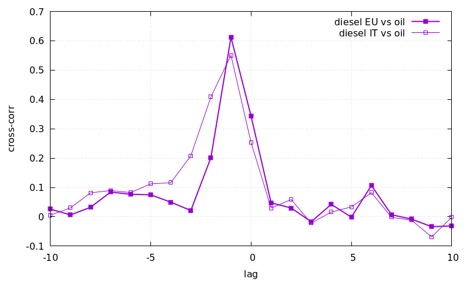

Short Report on Oil Derivatives Price in Italy and Europe
Table of Contents
- Authors
- Giulio Bottazzi
- Date
- January 15 2021
- Revision
- 0.4
Data Sources
This short report studies the dynamics of prices for automotive fuels (Euro-super and diesel) in Italy and Europe since 2005. The observed price movement is compared with the behavior of the crude oil price, which constitutes the main input in the production of automotive fuels. The analysis is based on weekly data. The price of oil is approximated with spot price for Brent Crude and are translated in Euro/barrel using the daily exchange rates. The oil price is provided by the Federal Reserve Economic Data (FRED) service of the Federal Reserve Bank of St.Louis while the exchange rate comes from Yahoo Finance.
The historical prices for oil derivatives are obtained from the Market observatory of the European Commission on Oil. These data, expressed as Euro/KL (1KL=1000l), are available since 2005 and updated weekly with the pubblication of the Oil Bulletin. Prices are collected through a survey in all European countries and represent the "price at the pump", that is the amount of money on average payed by the final consumer. The EU-level data are an average across all countries, weighted by national consumption. Time series are provided for both gross prices and prices net of duties and taxes. For the present analysis we use the latter definition (different regulatory regimes in different EU countries make the cross-country comparison of gross prices difficult) and focus on the oil derivatives used in propelling automobiles, namely the Euro-super 95 (Super) and Automotive gas oil (Diesel).
As the weakly schedule for the publication of oil prices and fuel pump costs are not synchronized, a linear interpolation is used to adapt the price of oil to the exact dates of the European Commission Oil Bulletin.
The final data is made of five time series, containing around 300 observations each, covering production prices for oil and consumption prices for Super and Diesel fuels in Italy and EU, from 2/01/2005.
Charts
Long run dynamics

Figure 1: Historical consumer price (net of duties and taxes) of 'Super' fuel in Italy and EU in EUR/L (left axis) and production price of oil, world-wide average, in EUR/Barrel (right axis) since January, 2005.

Figure 2: Historical consumer price (net of duties and taxes) of 'Diesel' fuel in Italy and EU in EUR/L (left axis) and production price of oil, world-wide average, in EUR/Barrel (right axis) since January, 2005.
Short run dynamics

Figure 3: Historical consumer price (net of duties and taxes) of 'Super' fuel in Italy and EU in EUR/L (left axis) and production price of oil, world-wide average, in EUR/Barrel (right axis) in the last 50 weeks.

Figure 4: Historical consumer price (net of duties and taxes) of 'Diesel' fuel in Italy and EU in EUR/L (left axis) and production price of oil, world-wide average, in EUR/Barrel (right axis) in the last 50 weeks.
Auto-correlation structure of price variation

Figure 5: Auto-correlation of price variation for the different time series.
For each time series the simple difference \(x_t=p_{t+1}-p_{t}\) and the correlation coefficient \(c_l=E[x_{t+l} x_t]\) is reported for ten time lags. The observed behavior is very similar across the different time series. Pump prices in Italy seem to have a less sticky dynamics than in the rest of Europe. Indeed the coefficients of delayed correlation are always lower for the former than for the latter. Interestingly, the 1-lag correlation for pump prices in Italy is significantly lower than the 1-lag correlation of oil price, while the European average prices display a perfect agreement with the latter.
Cross-correlation of price variation

Figure 6: Cross-correlation of 'Super' fuel and oil price variation.

Figure 7: Cross-correlation of 'Diesel' fuel and oil price variation.
Download
Price of Super and Diesel net of duties and taxes, European average Space separated columns. Data structure: year, month, day, super price (EUR/Liter), diesel price (EUR/Liter)
Price of Super and Diesel, net of duties and taxes, Italy Space separated columns. Data structure: year, month, day, super price (EUR/Liter), diesel price (EUR/Liter)
Brent crude price Space separated columns. Data structure: year, month, day, EUR/Barrel.